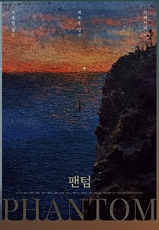
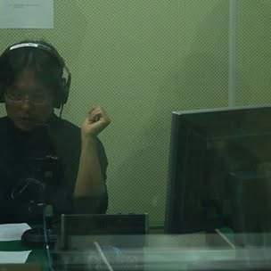
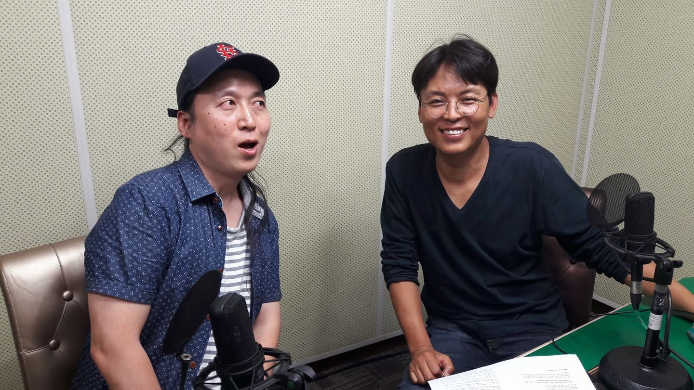
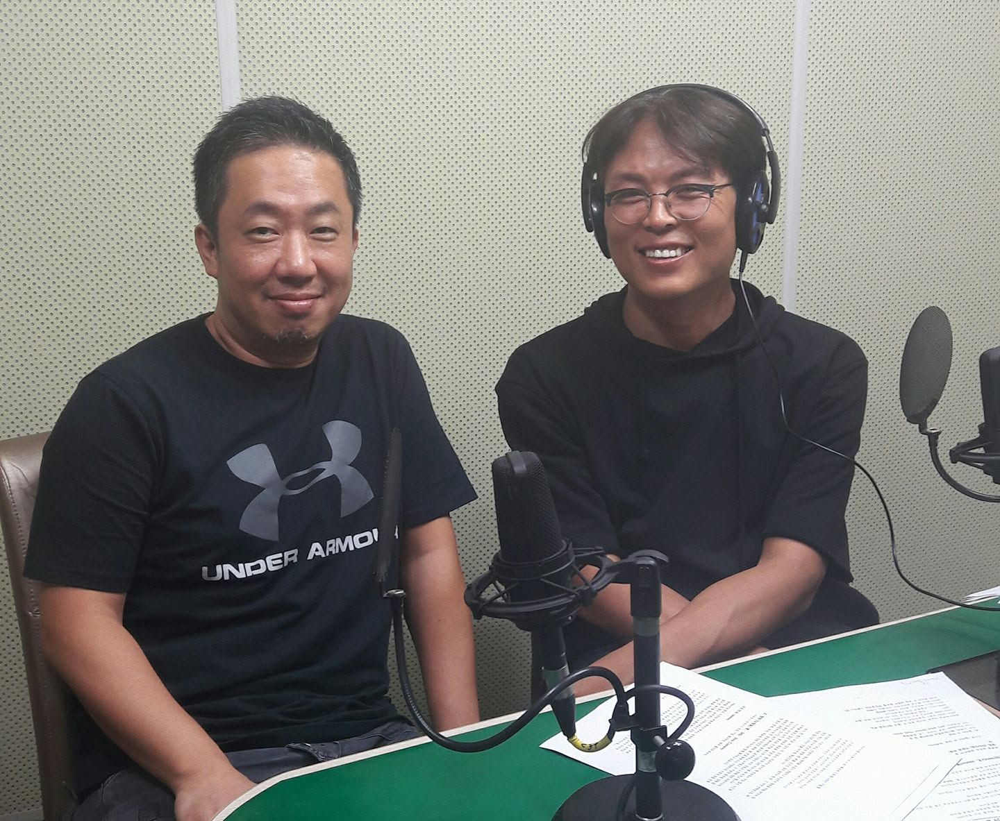
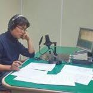

1998 · 데뷔작
벌이 날다 The Flight of the Bee
타지키스탄의 작은 마을, 굴욕에 맞서 우물을 파는 한 교사의 이야기. 잠셰드 우스마노프와 공동 연출한 흑백 데뷔작으로, 토리노국제영화제 대상·비평가상·관객상을 동시에 수상하며 세계 영화계가 주목하는 신예의 탄생을 알렸다.
- 토리노국제영화제 대상 · 비평가상 · 관객상
- 테살로니키국제영화제 은상
- 코트부스영화제 예술공헌상 · 아나파영화제 감독상
FILM DIRECTOR · MEDIA ARTIST
MIN BYUNG HUN
치유와 위로의 시네마 — Eternal Healing Cinema
THE DIRECTOR

민병훈은 러시아 국립영화대학(VGIK)에서 촬영을 전공하고 학사·석사 학위를 받은 뒤, 1998년 타지키스탄에서 촬영한 데뷔작 <벌이 날다>로 토리노국제영화제 대상·비평가상·관객상을 석권하며 세계 영화계에 이름을 알렸다.
이후 <괜찮아, 울지마>, <포도나무를 베어라>, <터치>, <사랑이 이긴다>로 이어지는 작품 세계를 통해 상처받은 사람들을 향한 응시와 위로를 스크린에 담아왔다. 자본으로부터 독립된 창작을 고집하는 그는 <황제>, <기적>, <팬텀>으로 이어지는 '생명 3부작'을 완성했고, 아내와 사별한 뒤 아들 시우와 함께 제주로 이주하여 자연과 삶, 죽음과 애도를 기록하는 '이터널 힐링 시네마'의 길을 걷고 있다.
2023년 아들과 함께한 자전적 다큐멘터리 <약속>은 부산국제영화제 월드 프리미어 이후 전국 극장과 공동체 상영으로 관객을 만났으며, 2022년부터는 미디어아트 작가로도 활동하며 서울과 제주의 미술관에서 개인전을 이어가고 있다.
“나는 내 마음속의 자유, 해방감을 느끼며 창작하고 싶다. 내가 당당한 이유는 자본으로부터 100% 독립한 영화인이기 때문이다.”
SELECTED WORKS
1998 · 데뷔작
타지키스탄의 작은 마을, 굴욕에 맞서 우물을 파는 한 교사의 이야기. 잠셰드 우스마노프와 공동 연출한 흑백 데뷔작으로, 토리노국제영화제 대상·비평가상·관객상을 동시에 수상하며 세계 영화계가 주목하는 신예의 탄생을 알렸다.

2001
고단한 삶을 살아가는 이들을 향한 따뜻한 위로. 감독·각본·촬영을 모두 맡아 완성한 두 번째 장편으로, 부산국제영화제 파노라마 부문에 초청되고 카를로비바리국제영화제에서 특별언급상과 비평가상을 받았다.

2006
사제의 길과 사랑 사이에서 흔들리는 신학생의 내면 풍경. 세르게이 파라자노프의 회화적 미학이 스민 영상시(詩)로, 부산국제영화제 PPP 코닥상을 수상하고 카를로비바리 경쟁 부문과 몬트리올국제영화제에 초청되었다.

2023 · 이터널 힐링 시네마
엄마와 이별한 아홉 살 시우는 아빠와 약속한다. "1년 뒤에 엄마가 있는 곳에 다녀오자"고. 그리움을 시로 눌러 담은 1년의 기록. 민병훈 필모그래피에서 가장 사적이고 내밀한 11번째 장편으로, 제28회 부산국제영화제에서 월드 프리미어로 공개되었다.
COMPLETE FILMOGRAPHY
자전적 다큐멘터리 · BIFF 월드 프리미어

생명 3부작 완결편

생명 3부작 · 제주 촬영

제주의 자연 · 단편

피아니스트 김선욱 · BIFF 월드 프리미어

네마프국제영화제 개막작

환경 다큐 · 서울환경영화제

중국 현대미술 거장 펑정지에 · 갤러리 필름

함부르크 · 상하이영화제 초청

화가 김남표 · 아티스트 시리즈

전주국제영화제 초청

서울환경영화제

마리클레르 특별상 · 영상자료원 올해의 영화

전주국제영화제 감독상 · 백영수 화백

환경 단편

아르메니아 여행 중 제작 · 그린 영화
BIFF PPP 코닥상 · 카를로비바리 경쟁
카를로비바리 특별언급상 · 비평가상
데뷔작 · 토리노 대상 3관왕

조연출 · 러시아 유학 시절
단편 · VGIK 재학 시절
단편 · VGIK 재학 시절
HONORS & AWARDS
필름의 프레임을 선택하면, 아래 스크린에 그 상의 이야기가 영사됩니다.
MEDIA ART
스크린 밖으로 확장된 시네마 — 제주의 자연과 애도의 시간을 담은 영상 설치 작업
2026. 7. 1 — 7. 2
아이프칠드런 엔젤아티스트 · 말레이시아 쿠알라룸푸르
스크린 밖으로 확장된 시네마가 국경도 넘었다. 테일러스대·헬프대에서의 상영과 강연 '예술이 너희를 자유케 하리라', 그리고 복지 대안학교 SBJK에서 연누리 작가와 함께한 120여 명 아이들과의 음악·설치미술 워크숍. 예술로 위로를 건네는 여정의 가장 최근 페이지.
2026. 1. 29 — 4. 19
아라리오뮤지엄 인 스페이스, 서울 종로구 율곡로 83
끊임없이 부서져 흩어지고 사라지는 파도와 구름, 무지개 같은 제주 풍광. 역재생 기법으로 시간을 거슬러 오르는 신작 영상 <소멸>(2025)이 처음 공개되었으며, 마지막 공간에서는 다큐멘터리 <약속>의 축약본을 상영했다.
2025
아라리오뮤지엄 동문모텔1, 제주
삶과 죽음, 자연과 기억이 교차하는 제주 풍경 속에서 애도의 시선을 담은 시적 영상전.
2024
산속등대미술관
제주 곶자왈과 바닷가, 눈에 보이지 않는 순간들의 기록.
2023
대전MBC 아트&미디어대전 입선
생명의 근원으로서의 바다를 응시한 미디어아트 작품.
2022. 2. 22 — 3. 19
호리아트스페이스 & 아이프 라운지, 서울
미디어아트 작가로서의 첫 개인전. 제주의 자연을 담은 영상 작품 20점 — 천사의 숨, 깃털처럼 가볍게, 영원과 하루, 나도 나를 어쩌지 못할 때, 볼수록, 안개처럼 사라지리라, 봉인된 시간, 바다와 독약, 레퀴엠.

볼수록 (2022), 영상 스틸
PUBLICATIONS & RADIO

가쎄 · 2018

가쎄 · 2017

2014 · 스크린 독과점 비판

오래된미래 · 2012

이담북스 · 2010
RADIO
“민병훈, 그가 영화로 생명을, 삶을, 예술을 터치한다.”
4년간 진행한 영화 음악·비평 라디오 프로그램. 다시듣기는 공식 홈페이지에서 제공된다.

2016년 12월 3일 첫 전파부터 2020년 8월 15일 마지막 인사까지, 매주 토요일 오후의 목소리. cpbc 공식 팟캐스트에는 90회분의 방송이 남아 있다. 그중 몇 편을 여기서 바로 들을 수 있다.

2016. 12. 3
"민병훈, 그가 영화로 생명을, 삶을, 예술을 터치한다." 매주 토요일 오후 4시, 이후 4년간 이어질 영화와 음악의 여정이 이날 처음 전파를 탔다. 초기 음원은 남아 있지 않아, 팟캐스트에 남은 가장 오래된 방송(2018. 12. 1)을 들려드린다.

2019. 12. 21
한 해의 끝, 성탄을 기다리는 주말 오후의 방송분. 부스 안의 온기가 그대로 담겨 있다.

2020. 1. 4
새로운 십 년을 여는 새해 첫 토요일의 방송분.

2020. 8. 15
4년의 여정을 마무리한 고별 방송. 마이크를 내려놓던 날의 기록.
방송 음원은 cpbc 가톨릭평화방송 공식 팟캐스트에서 재생됩니다.
ARCHIVE
1998년 데뷔부터 현재까지 — 수상, 개봉, 전시, 방송의 기록
공익재단 아이프칠드런의 엔젤아티스트로서 테일러스대학교와 헬프대학교에서 <설계자>·<가면과 거울>을 상영하고 '예술이 너희를 자유케 하리라'를 주제로 강연했다(<기적>의 서장원·박지연 배우 동행). 이튿날에는 교육 사각지대 아이들을 품는 복지 대안학교 SBJK에서 연누리 작가와 함께 120여 명의 학생들과 음악·설치미술 워크숍을, 스리 하르타마스 소방서에서 소방관들을 위한 문화예술 프로그램을 진행했다.
역재생으로 시간을 거슬러 오르는 신작 영상 <소멸>(2025) 최초 공개. 1월 29일부터 4월 19일까지 열렸다.
삶과 죽음, 자연과 기억이 교차하는 제주 풍경 속 애도의 시선.
제주 곶자왈과 바닷가의 순간들을 기록한 영상 설치.
이탈리아 피렌체에서 민병훈 감독의 작품 세계가 유럽 관객과 만나다.
아들 민시우 군과 함께 출연해 영화 <약속>과 제주에서의 삶을 이야기하다.
엄마를 그리며 시를 쓰는 시우 군의 사연이 방송을 타며 영화 <약속>에 대한 관심으로 이어지다.
11번째 장편이자 가장 사적인 다큐멘터리. 극장 개봉과 함께 전국 공동체 상영으로 확산. 83분, 전체관람가.
다큐멘터리 쇼케이스 공식 초청. "가장 오랜 시간 만들었고, 가장 힘들었던 영화."
미디어아트 작가로서 첫 공모전 수상.
제주의 대자연 속에서 아들과 함께 살아가는 감독의 일상이 전파를 타다.
<황제>(2017), <기적>(2020)에 이은 생명 3부작의 마지막 장.
제주 자연을 담은 영상 작품 20점. "힘든 이들에게 조용한 위로를" — 영화감독에서 미디어아트 작가로의 확장.
'창작자의 작업실' 시리즈로 개막을 장식하다.
제주에서 촬영한 생명 3부작 두 번째 작품과 단편.
피아니스트 김선욱 주연, 아티스트 시리즈의 정점. 생명 3부작의 서장.
미디어아트와 영화의 경계를 실험한 작품.
매주 토요일 오후 4시, 2020년 8월까지 4년간 진행한 영화 라디오.
4회 연속 진출 기록. 시화호의 생태를 담은 환경 다큐멘터리.
청소년 자살과 가족의 구조를 응시한 장편. 함부르크·상하이국제영화제 초청.
스크린 독과점에 맞선 독립영화인의 기록이자 선언.
신사실파 화가 백영수 화백의 삶을 담은 단편.
유준상·김지영 주연. 조기종영 논란 속 재개봉 운동이 일어난 화제작.
독립영화 배급 구조에 대한 사회적 논의를 촉발한 작품.
여행 중 단편 <노스텔지아>를 제작. 같은 해 저서 <민병훈 감독의 영화가 좋다> 출간.
카를로비바리 경쟁부문·몬트리올국제영화제 초청. 파라자노프적 미학의 영상시.
부산프로모션플랜에서 기획을 인정받다.
체코의 명문 영화제에서 두 개 부문 수상.
감독·각본·촬영 1인 3역으로 완성한 두 번째 장편.
유럽과 러시아에서 이어진 수상 행진.
데뷔작으로 3관왕. 같은 해 테살로니키국제영화제 은상까지 — 한국 독립영화의 사건.
타지키스탄 로케이션, 잠셰드 우스마노프 공동 연출. 감독·제작·촬영·편집을 모두 맡다.
러시아 국립영화대학 재학 중 단편 연출과 현장 수업.
FOLLOW & CONTACT